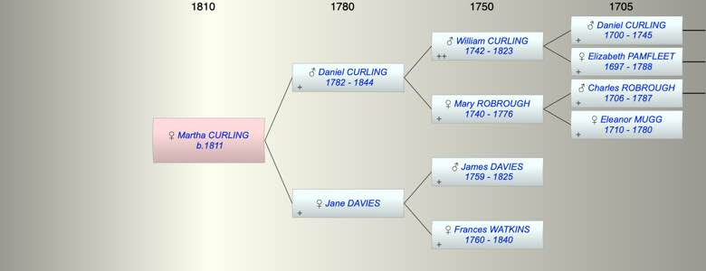

| [Index] |
| Martha CURLING (1811 - ) |
|  |
| b. 17 Jul 1811 at City of London |
| Parents: |
| Daniel CURLING (1782 - 1844) |
| Jane Sarah DAVIES |
| Events in Martha CURLING (1811 - )'s life | |||||
| Date | Age | Event | Place | Notes | Src |
| 17 Jul 1811 | Martha CURLING was born | City of London | Note 1 | ||
| 1844 | 33 | Death of father Daniel CURLING (aged 62) | London | Note 2 | |
| Note 1: bap Fish St Hill 12 Aug 1811 dau of Daniel and Jane Sarah pf Cheapside Ex Ancestry PR |
| Note 2: buried Norwood Cemetery of Canonbury Square aged 63 ex Ancestry PR |
| Personal Notes: |
|
Probably married Samuel Lewis at St Mary Islington 28 Apr 1835 ??
1851 census Martha Lewis 39 b Cheapside |
| Created on a Mac™ using iFamily for Mac™ on 8 Oct 2023 |